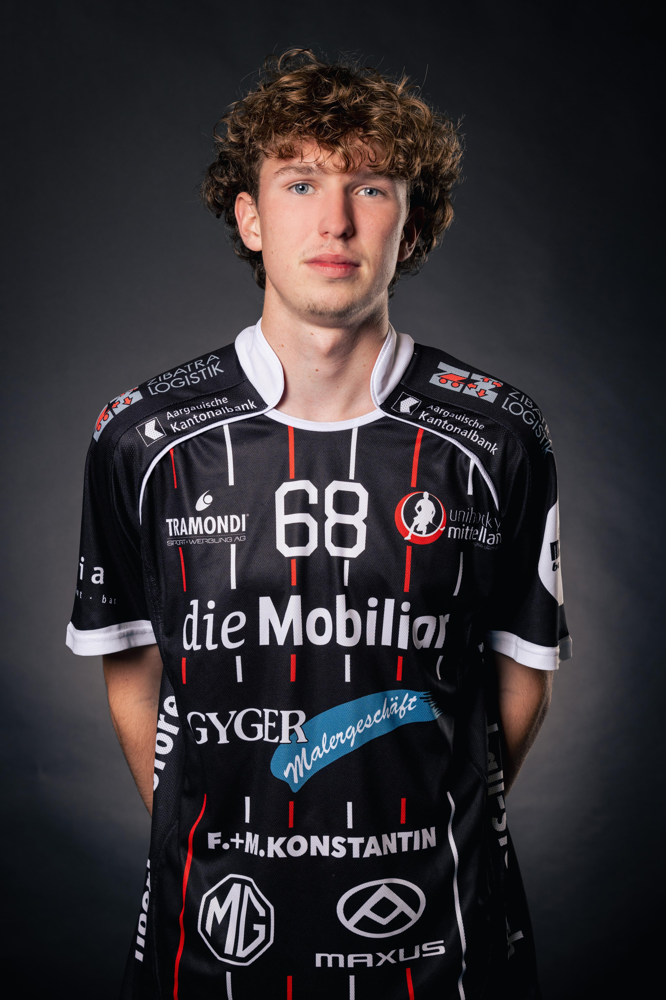

Hallo, ich bin Joel Kaderli
Zur Zeit besuche ich die Informatikmittelschule in Aarau.
Ich bin nun im 2. Jahr der Ausbildung.
Über mich
Ich bin ein offener und neugieriger Mensch,
der gerne Neues ausprobiert und motiviert ist, sich weiterzuentwickeln.
Am liebsten arbeite ich an Projekten, bei denen ich kreativ sein kann und eigene Ideen einbringen darf.
Ich mag es, mit anderen zusammenzuarbeiten, und freue mich, wenn ich jemanden unterstützen oder motivieren kann.
Auch wenn es mal schwieriger wird, versuche ich, positiv zu bleiben und eine Lösung zu finden.
Mein Werdegang
Ich habe die Primarschule in Ofrtingen besucht und danach auch die Bezirksschule in Oftringen.
Nach der Sekundarschule habe ich mich entschieden, die Informatikmittelschule zu besuchen,
da ich mich sehr für Informatik intressierte und auch noch gerne zur Schule gegangen bin.
Meine Hobbys
Ich bin 18 Jahre alt und interessiere mich besonders für Technik, Wirschatf und Sport.
In meiner Freizeit spiele ich sehr gerne Unihockey, Basketball und Fussball,
und ich gehe auch gerne joggen, um einen Ausgleich zum Alltag zu schaffen.
Aktuell spiele ich bei Unihockey Mittelland Olten Zofingen in der U21-Mannschaft. Ausserdem bin ich aktiv in der Jungschar als Leitungsperson und im Turnverein STV Küngoldingen engagiert.
In meiner Kirche arbeite ich im Technik-Team mit und kümmere mich dort um Projektion und
Licht bei Veranstaltungen. Technik begeistert mich generell,
sei es im praktischen Einsatz oder beim Programmieren kleiner Projekte,
um mein Wissen in Informatik zu erweitern.
Zusätzlich interessiere ich mich auch für wirtschaftliche Themen. In der Schule bin ich zudem noch der Kassier der Klassenkasse.
In meiner Freizeit verbringe ich gerne Zeit mit Freunden und schaue auch gerne Sport.
